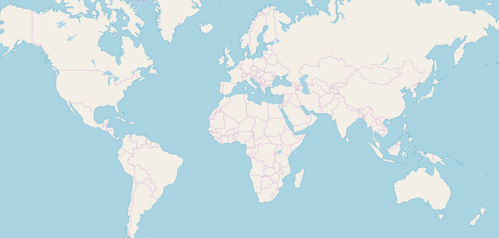

Aeroportos
Carregar aeroportos
Preços
Carregar preços das passagens
Opções
Menor caminho entre 2 aeroportos
Menor tarifa entre 2 aeroportos
Viajar ao redor do mundo
Viajar ao redor do mundo (heurística)
De qualquer lugar a qualquer lugar
Checar alturas dos voos
Alternar navegação
Grafos | Autor:
Axell Brendow